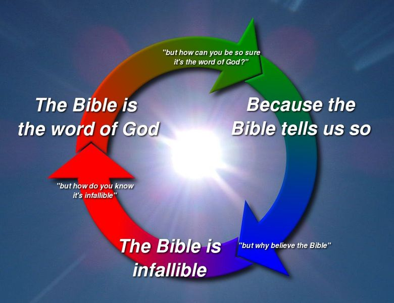
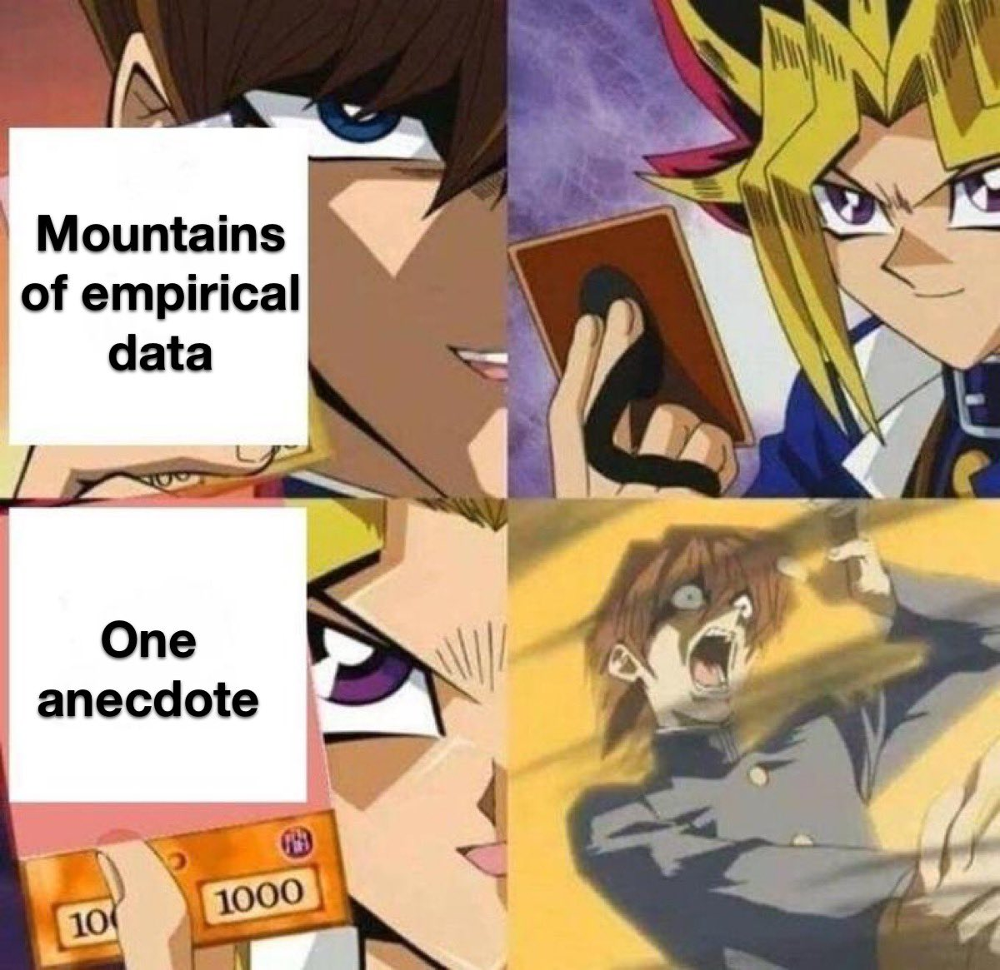
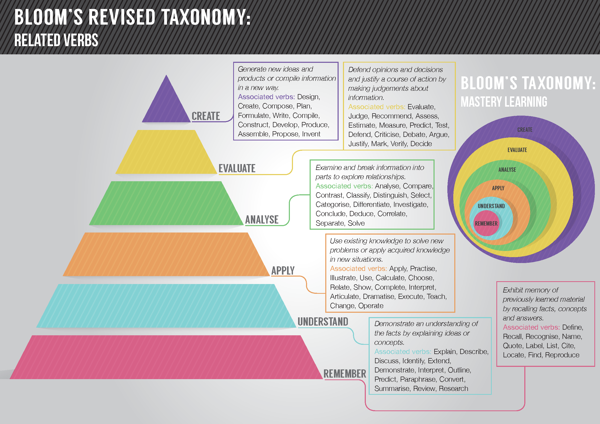
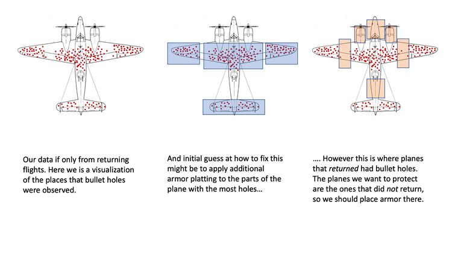

Formal Logic, Contradictions, Fallacies, and Biases
Table of Contents
- 1. Summary Of Formal Logic
- 2. Formal Logic
- 3. Distinguishing Between Different Types Of Contradictions
- 4. Properties of Premises
- 5. Statistical Reasoning Skills
- 6. Fallacies
- 7. Bloom’s Taxonomy
- 8. Graham’s Hierarchy Of Disagreement
- 9. Question Evasion Techniques
- 10. Tactical Nihilism
- 11. Cognitive Biases
Note: I haven’t finished writing this file yet.
1. Summary Of Formal Logic
- Logical Operations, Logic Symbols, Differences and Contexts with Natural Languages like English
- Truth Tables, Order of Operations
- Logical Forms
- Conditions, Converses, Inverses, Contrapositives
- Logical Quantifiers
- DeMorgan’s Laws, DeMorgan’s Laws for Quantifiers
- Tautologies, Contradictions
- Inference Rules, Latin Terminology
- Invalid Logical Arguments
- Usage of NAND and NOR to create all other logical statements
2. Formal Logic
- Formal logic starts with stating our language, logic, definitions, axioms, and underlying assumptions.
- An argument is a list of premises followed by a conclusion.
- A valid argument is an argument such that any substitution of values for variables in it which makes the premises true also makes the conclusion true.
- If any assignments of values to variables appearing in the argument makes all the premises true, then it also makes the conclusion true.
- Example: truth tables and/or logic.
- “Snow is white, and grass is green.”
- If any assignments of values to variables appearing in the argument makes all the premises true, then it also makes the conclusion true.
- A valid argument is an argument such that any substitution of values for variables in it which makes the premises true also makes the conclusion true.
- If an argument is a logical rule, that means that it is valid (and important as a basic form of valid argument).
- Important: The strategy for proving an implication is to assume A for the sake of argument, then deduce B.
- When you finish this argument, you have not proved B (nor have you proved any of the intervening steps), because they all depend on the assumption A that you made for the sake of argument. But you have proved A → B.
- Be careful with definitions. Assume inclusive OR unless stated otherwise. Lawyers make great use and/or to avoid ambiguity.
- We give any statement we can use a line number so we can refer to it, when we are being very formal.
- When we write goals, the goal is just a comment. Notice that we do not give it a line number, since we cannot use it.
- The lines using the assumption A are indented, and we need to remember that once we have proved A → B we are no longer entitled to refer to anything in that block of statements, because all those lines depend (presumably) on the assumption A which we are no longer making.
- A ↔ B can be defined as (A → B) ∧ (B → A).
- If we have proved A↔B, we have shown that A and B are effectively saying the same thing, so we may freely substitute A for B and B for A.
- For example, because the De Morgan law ¬(A ∧ B) ↔ (¬A ∨ ¬B) is a theorem, it is valid to replace ¬(A ∧ B) with ¬A ∨ ¬B or vice versa in a more complicated logical expression as a step in a proof.
- However, we can not use this rule if we are proving the law itself because then we would be assuming what we are trying to prove.
- To prove a statement ¬P , assume P and reason to ⊥.
- Negation introduction is the direct strategy for proving a negative statement, but Reductio Ad Absurdum is more general.
- Since having two conflicting statement is necessary to generate a contradiction, it follows that the rule of contradiction ((P ^ ¬P) -> ⊥) is the only way to prove the absurd, and this is the case.
- (P v Q) <-> (¬P -> Q) <-> (¬Q -> P)
- Anything can be deduced from ⊥, which represents a fixed false statement.
- All the binary operators except → are associative.
- Mixed expressions in ↔ and ⊕ actually have the same meaning no matter how parentheses are placed.
- There are always 2n possibilities regarding the truthfulness of a set of n premises.
- Propositions that are logically equivalent (logical equivalence can be elegantly displayed on truth tables) can be substituted for one another.
- If we can prove that A ↔ B is a tautology (where A and B are complicated expressions) then we have also proved that A and B are logically equivalent.
- To model the way that we actually reason in mathematics (or any other context for that matter) we need all the operations we have listed. We don’t gain by reducing the number of operations at the price of making logical sentences longer and harder to understand.
- Technical Remark about Letters:
- Letters from late in the alphabet (P, Q, R) are single propositions with no internal structure.
- Letters from earlier in the alphabet (A, B, C) stand for arbitrary sentences which might have complicated structure. P for example is not a theorem (because it can be either true or false) whereas A might be a theorem (it might be P ∨ ¬P on closer inspection).
- A, B ⊢ A ∧ B is the linear notation for the traditional argument notation with the horizontal bar above the conclusion.
- The word ’and’ doesn’t always have the same meaning; sometimes it connects noun phrases, clauses, or is part of a noun phrase.
- Examples:
- 3 and 7 are prime numbers. (^)
- 3 is a prime number, and 7 is a prime number. ^
- 3 and 7 are relatively prime. u and v are linearly independent. a and b are parallel. r, s, and t are parallel. ≠^≠
- Demonstrating this with Venn diagram.
- Examples:
- Proof by contrapositive assumes the conclusion is false and tries to prove the hypothesis true.
- Example Logic Statements
- If you clean your room, we will go out for pizza.
- If you don’t wash the car, you won’t get to drive it.
- Interesting Logic Statements
- If Napoleon conquered China, then 2+2=5.
- If Lee won at Gettysburg, the South would have won the Civil War.
- If Lee won at Gettysburg, then the capital of West Virginia is Richmond.
- If Lee won at Gettysburg, then Caesar conquered Germany.
- The logical comical absurdity proposition implies that conditional proposition require hypotheses to be in the past and conclusions to be in the future.
- To prove an conditional: A -> B:
- 1) Assume A (for the same of argument)
- 2) Prove B, A -> B (while abandoning part of the argument depending on conditional assumption); deduction 1 - n.
- To prove a biconditional: A <-> B:
- 1) Assume A
- 2) Prove B
- 3) Assume B
- 4) Prove A
- 5) By biconditional theorem, Part I and Part II
- The inverse and the converse will always be logically equivalent to each other since the inverse is the contrapositive of the converse.
- The statement and the contrapositive will always be logically equivalent to each other.
- The word ’and’ doesn’t always have the same meaning; sometimes it connects noun phrases, clauses, or is part of a noun phrase.
- Anything implies a true statement, and a false statement implies anything, and these two considerations are enough to fill in the truth table for implication.
- And true statements can only imply other true statements.
- The mathematical sense of implication has nothing to do with causality or counterfactual speculations.
- Proofs by Contradiction have to be used when there is nothing else that could be used. There is no option because they are the only logical strategy left available. The good news is that they can be used to prove a statement of any form.
- The conclusion that is arrived at by proof by contradiction is ¬(Assumption).
- Any proposition can be created using only NAND or only NOR logical operators. It is also the case that any proposition can be created using only the AND, OR, and NOT operators.
- When given an OR statement as a premise, proofs by cases will often be needed. Another common way to deal with OR statements is to assume that one of the operands is false, and prove it for the other operand.
- And when you have to prove a statement containing an OR operator, you can often just prove only one of the operands and apply the addition rule.
- The rules of inference are basically combinations of logical forms
- When given an OR statement as a premise, proofs by cases will often be needed. Another common way to deal with OR statements is to assume that one of the operands is false, and prove it for the other operand.
- The probability of two events occurring together (in “conjunction”) is always less than or equal to the probability of either one occurring alone—formally.
- NOR is expressed with the English phrase “Neither… Nor”. NAND does not have an equivalent English phrase.
- NOTE: Multiple conclusions can be drawn from the same set of premises.
- Expanding mathematical definitions (e.g. odd = 2k+1, tree = connected + acyclic) is an important logical move.
- It is also a good idea to introduce separate witness variables that are different from the letters used in the definitions.
- Arbitrary objects are introduced when proving a universal statement or introducing a witness to an existential assumption.
- What the Tortoise said to Achilles
3. Distinguishing Between Different Types Of Contradictions
Although you already know the differences between all three of these, is it possible for you to draw some diagrams illustrating each of them, as well as diagrams showing how they relate to each other? Perhaps even diagrams showing cases where two of these concepts could be the same thing? (or maybe even show a case where all three of them can identify/generalize the same exact thing?)
- An ordinary contradiction
- A performative Contradiction
- Circular reasoning (often a circle of contradictions)
It probably won’t be necessary to write any rigorous epistemology theorem that arbitrary statements cannot be proven false. The epistemological framework that I am proposing does address arbitrary statements by asserting that they cannot be accepted as certain or possible unless there is at least some amount of evidence to designate it as “possible”. And although some people might claim that an abstract, ill-defined, and lengthy concept like God cannot be proven false, it actually can be proven false by either: 1. proving that the epistemic basis for believing God and the religion is ultimately a circular reasoning fallacy, and/or 2. letting all the contradictions pile up until there is no reasonable basis left to accept the concept.
Since knowledge is structured according to Empirically-Grounded Coherentism, this is the reason why the basis for rejecting ideologies or scientific propositions is to ultimately let more and more contradictions pile up until the believer chooses to reject the doctrine or ideas that they previously used to believe in.
People believe in whatever is coherent with the rest of the beliefs that they believe in, so if they’re able to recognize enough contradictions between things that they definitively believe in and things that they less definitively believe in, they will eventually abandon the less definitive beliefs in order to stabilize their structure of beliefs to a point where they perceive their beliefs to be stable once again, whether or not they actually are or not in reality.
4. Properties of Premises
4.1. Necessary Condition
- Q is true only if P is true.
- ’P is necessary for Q because P being true is needed for Q to be true’
4.2. Sufficient Condition
- If R is true, then S is true.
- ’R is sufficient for S because R is all you need to get S’
- ’R is enough to get S’
4.3. Conditions Possibilities
Any Condition Has Four Possibilities:
- Necessary & Sufficient [1]
- Not Necessary & Sufficient [2]
- Necessary & Not Sufficient [3]
- Not Necessary & Not Sufficient [4]
| Necessary | Not Necessary | |
|---|---|---|
| Sufficient | [1] | [2] |
| Not Sufficient | [3] | [4] |
4.4. Intrinsic and Instrumental Value
- Intrinsic Value is valuing something for its own sake.
- Extrinsic Value (AKA Instrumental Value) is valuing something as a means to an end.
- Some things can have both instrumental and intrinsic value.
- The distinction is important to make sure that we have our priorities in order, that is, that we don’t incorrectly value instrumental value over intrinsic value.
4.5. Implicit / Suppressed Premises
- These are premises that aren’t explicitly stated since they are obviously understood.
- One suggestion is that premises can remain suppressed if they are obvious and uncontroversial.
- The problem with this is that controversy is relative to people. Democracy for example is uncontroversial in the Western world, even though it is inferior to reason.
- In mathematics, proofs often make statements that utilize basic properties of arithmetic without explicitly stating these properties.
- It also depends on what level the proofs are being written at and the context as well.
- This is done because the proofs would be harder to follow if these properties are widely known and implicitly understood.
- So, in mathematics, it is okay to not explicitly state extremely simple details in some cases if it is annoying to state them and they will be understood.
- Proofs are valid mathematical arguments written for the purpose of convincing the readers that the conclusions are valid given the premises.
- Since their goal is to persuade the reader, they should be written in formats that are clear and easy to follow.
- It definitely depends on the context. It is okay to keep suppressed premises in mathematics in several cases, provided that they were already proven earlier.
- If we could only choose between keeping premises implicit or making them explicit, it is better to make them explicit, especially if they would reveal invalid premises or contradictions.
- The only time when it is beneficial to keep premises suppressed is when:
- The premises are already obvious to begin with, and
- The premises can be verified using sound arguments, and
- Making the premises explicit would make the argument harder to follow, and
- The argument would remain valid even if the premises were made explicit.
4.6. Justification And Explanation
- If our beliefs and actions are justified, we typically are not criticized for them.
- How does one explain what they believe?
- How does one justify what they believe?
4.7. Normative And Descriptive Claims
4.7.1. Descriptive Claims
- Are statements that describe something.
- They express an understanding of how something is or could be.
- They don’t make evaluations.
4.7.2. Normative Claims
- Are statements that express an evaluation or judgment.
- Are often implicit.
- Relative to a standard or ideal.
- Words that are commonly associated with normative claims are: should, shouldn’t, right, wrong, and many more.
5. Statistical Reasoning Skills
5.1. Bayes’ Theorem
5.2. Correlation & Causation
- Positive Correlations: When events frequently occur together.
- Negative Correlations: The occurrence of one event makes it unlikely that the other event will not occur.
- Correlation ≠ Causation
- Alternative explanations include common/alternative causes and coincidences.
Facts about Correlation & Causation
- Correlation is correlated with causation.
- Causation causes correlation.
5.3. The Conjunction Fallacy
5.4. Type I And Type II Errors
Every hypothesis test has four possible outcomes:
| Decision | H0 is True | H0 is False |
|---|---|---|
| Fail To Reject H0; Reject HA | Correct | Type II Error |
| Reject H0; Choose HA | Type I Error | Correct |
- Type I Errors (False Positives) occur if the Null Hypothesis is rejected when it is actually true.
- A False Positive is a result that wrongly indicates that a given condition exists when it actually doesn’t (the positive result is actually false).
- Type II Errors (False Negatives) occur if we fail to reject the null hypothesis when it is actually false.
- A False Negative is a result that wrongly indicates that a given condition does not hold when it actually does (the negative result is actually false).
- ’Fail to Reject’ the Null Hypothesis is used instead of ’accept’ because there is still a small probability (β) that it could be wrong.
- α (level of significance) is the probability of making a Type I Error, if the Null Hypothesis is true.
- The reason why this is the case is because α is a probability that makes up one tail of the curve, the other, or both simultaneously.
- If the null hypothesis is true, it’s still possible to get values for the mean that are located in those tails, but i
- β is the probability of making a Type II Error, if the Null Hypothesis is true.
- Moreover, how could it simultaneously be true that there is an α probability that I make a Type I Error, and a (1 - α) probability that I make a Type II Error?
- Thus, if I reject H0, then I would prefer low α.
5.4.1. Alternate Table In Terms Of True/False Positives/Negatives
Every hypothesis test has four possible outcomes:
| Decision | H0 is True | H0 is False |
|---|---|---|
| Fail To Reject H0; Reject HA | True Negative | False Negative |
| Reject H0; Choose HA | False Positive | True Positive |
5.5. Understanding Regression to the Mean
Regression to the Mean: Jayman explains what Regression to the Mean is, and shows why it happens with some example calculations using the breeder’s equation.
Regression to the Mean: Veritasium explains what Regression to the Mean is, and how many statistical studies don’t account for it, thus contributing to the abundance of fake academic research.
Regression to the Mean: Blithering Genius explains that Regression to the Mean does not imply that selection is always reversed. Regression to the Mean is a statistical effect due to the removal of sample bias.
6. Fallacies
- Formal fallacies are defects in the logical forms of arguments, not the content.
- Informal fallacies are defects in the content of arguments, not the logical forms. These occur when the premises do not support the conclusion.
- The Fallacy Of Composition arises when we assume that the whole has the same properties as its parts. It is an informal fallacy.
- The Fallacy Of Division arises when we assume that the parts of some whole have the same properties as the whole. It is an informal fallacy, and it is the opposite of the fallacy of composition.
6.1. Ad Hominem Fallacies
Ad Hominem Fallacies are fallacies that attack the person making the argument instead of the argument itself.
- Abusive Ad Hominem: Attacks the speaker directly.
- Guilt By Association: Whenever one tries to argue against a certain view by pointing out that some unsavory person is likely to have agreed with it. Example: Nazis drank water, but that doesn’t mean that water is bad.
- Genetic Fallacy: Condemns the origin of a claim instead of the claim itself. Alternatively, the origins of a claim may be used to wrongly support the claim instead of giving valid reasons to support it instead.
- Circumstantial: Claims that the speaker is only advancing the argument to advance their own interests (attacking the speaker’s circumstances instead).
- Tu Quoque: Accuses a person of acting in a manner that contradicts some position that they support, and concludes that their view is worthless. Although pointing out hypocrisy (tu quoque) and conflicts of interest (circumstantial ad hominems) don’t attack the arguments directly, they are still worth pointing out. If the opponent can’t defend their apparent hypocrisy, then they have a contradiction. And if they have a conflict of interest, then the argument should probably be evaluated by someone with no conflict.
Examples of the Ad Hominem Fallacy in Politics
- Donald Trump’s supporters include KKK grand wizards and white nationalists.
- Donald Trump’s tower was built with Chinese steel (tu quoque).
- Nazis drank water but that doesn’t mean that drinking water is bad. So if there are white nationalists that support Donald Trump, that statement alone does not count as sufficient evidence to prove that he is a bad person. He is a terrible person for other reasons.
6.2. Post Hoc Ergo Propter Hoc
“After this, Wherefore, Because of this”
6.4. Appeal to the People
Establishes the truth of some claim P on the basis that a lot of people believe P to be true. Special Note: It’s not possible to make an Appeal to the People Fallacy when dealing with emotional/value knowledge, since that knowledge is supposed to be subjective and can be based on popular consensus.
6.5. Begging the Question
When trying to understand the why the logical form of circular reasoning is invalid, recall that a false statement implying a chain of false statements does not generate a true statement.
- So although F -> F is T on the truth table when evaluating conditionals, true statements cannot be generated from false statements when making arguments.
It can be particularly difficult to catch circular reasoning fallacies since all the statements in the fallacy give coherence to each other, albeit in an illegitimate way.

6.6. Category Errors
6.7. False Equivocation
The usage of the False Equivocation Fallacy seems to be strongly affected by the Sapir-Whorf Effect.
Examples of the Equivocation Fallacy
- We don’t have free will (metaphysical). That’s bad! -This falsely equivocates Metaphysical Free Will with Epistemic Free Will.
- Memes
Note: Analogies are very susceptible to false equivocation fallacies.
People use analogies so often to convey their political ideas, whatever they are. And this is a primary reason why False Equivocation Fallacies are so common in political rhetoric. People often use analogies to convey their ideas without checking (or even realizing) that all the necessary conditions for a valid comparison are meant.
6.8. Anecdotal

6.9. Slippery Slope
Once one event occurs, other related events will follow, and this will eventually lead to undesirable consequences. Examples of the Slippery Slope Fallacy in Politics
- Gay Marriage will lead to polygamy, incest, and beastiality
- First someone might start doing tobacco, then they’re start doing cannabis, and then before they know it, they’re being doing methadone too.
- Today’s jay walker and litterer will be tomorrow’s thief and window breaker.
- If we let one Nazi speak freely, then soon we’ll have a second Holocaust.
- Socialism is just a gateway into communism.
- Arguing against gun control laws and more government regulation is not a slippery slope fallacy because even more gun control laws and even more government regulations are still constantly being proposed.
6.10. Appeal to Consequences
The Appeal to Consequences occurs the person making the fallacy is assuming that the conclusion is bad, without honestly assessing and justifying whether the conclusion is really bad or not.
Example: Someone argues that abortion is bad because it counts as “eugenics”, but they never evaluated whether eugenics is actually a bad thing or not. This has the following logical form:
- Abortion -> Eugenics
- Eugenics is bad.
_ _ _ _ _ _ _ _ _ _ _ _ _
Conclusion: Abortion is bad (because it entails eugenics).
Appealing to Nature regarding the intrinsic selfishness and intrinsic violence of life is not an appeal to consequences. It’s just Nature, and nothing can really be done to change the way it is.
Note: I’m skeptical that Appeal to Consequences is a real fallacy in many cases since we always (inevitably) have to appeal to the consequences on literally everything when arguing in favor of what we believe would be “best”.
7. Bloom’s Taxonomy

8. Graham’s Hierarchy Of Disagreement
{kind=link}
9. Question Evasion Techniques
Question Evasion Techniques are various techniques how people will avoid questioning their beliefs and worldview:
- Ignoring the question
- Acknowledging the question without answering it
- Questioning the question by:
- requesting clarification
- reflecting the question back to the questioner, for example saying “you tell me”
- Attacking the question by saying:
- “the question fails to address the important issue”
- “the question is hypothetical or speculative”
- “the question is based on a false premise”
- “the question is factually inaccurate”
- “the question includes a misquotation”
- “the question includes a quotation taken out of context”
- “the question is objectionable”
- “the question is based on a false alternative”
- Attacking the questioner
- Declining to answer by:
- refusing on grounds of inability
- being unwilling to answer
- saying “I can’t speak for someone else”
- deferring answer, saying “it is not possible to answer the question for the time being”
- pleading ignorance
- placing the responsibility to answer on someone else
10. Tactical Nihilism
Tactical Nihilism: A bad-faith debating tactic where the debater selectively rejects commonly understood concepts, systems of classification, or terminology used by their opponent, halting any substantive debate, but supports their own viewpoints using those same concepts.
Instead of evaluating the logic of an opposing argument, the tactical nihilist will feign confusion, and attack a term used by their opponent. If the opponent, unaware of the tactic, takes the debater’s apparent confusion in good faith, the conversation is quickly derailed into long discussions where the debater will continually request more and more evidence simply to establish the term’s definition or validity, which the debater really understood in the first place. The debater will split every hair, attempt to deconstruct other words and concepts, and request more evidence. The original argument is forgotten and appears to be unaddressed by the opponent, and the debater is then able to feel victorious. Example:
Alice: White people, becoming a dwindling and hated minority in the United States, face challenges as a group and should be allowed to advocate for their interests as a race.
Bob: Race? What even is that, really? And what is white? What about Italians and the Irish? I don’t even know what you’re talking about.
Alice: Wait, you support black, Hispanic and Asian minority activism. You know what race is, and I’ve never heard you try to deny or deconstruct any of those other racial identities before. And you sure seem to know what white people are when you’re attacking them for white privilege, or when you think there are too many of them. Please stop with the tactical nihilism.
11. Cognitive Biases
i
11.1. Survivorship Bias
i

11.2. Frequency Illusion
{kind=link}
11.3. Hindsight Bias
{kind=link}
11.4. A Secular Explanation Of The Law Of Attraction
The statistical explanation of miracles: Littlewood’s Law.
Wikipedia: The Law of Attraction.
To get something, two things must be true:
- The thing must exist.
- You must see it.
The Law of Attraction obviously can’t change 1, but if 1 is already true and you aren’t looking for it, you’ll still miss it. So, by making you look for it and fixing 2, the Law of Attraction “seems like” it made 1 happen as well.